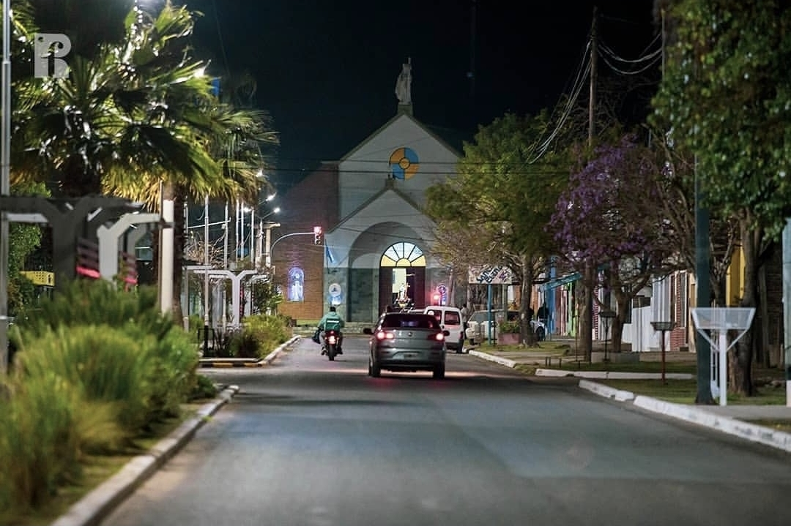
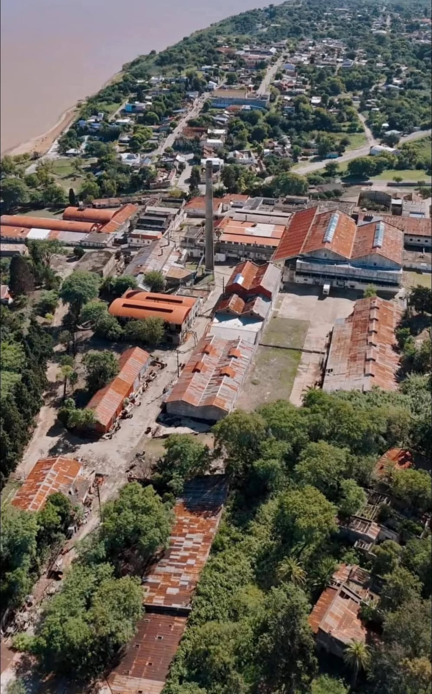
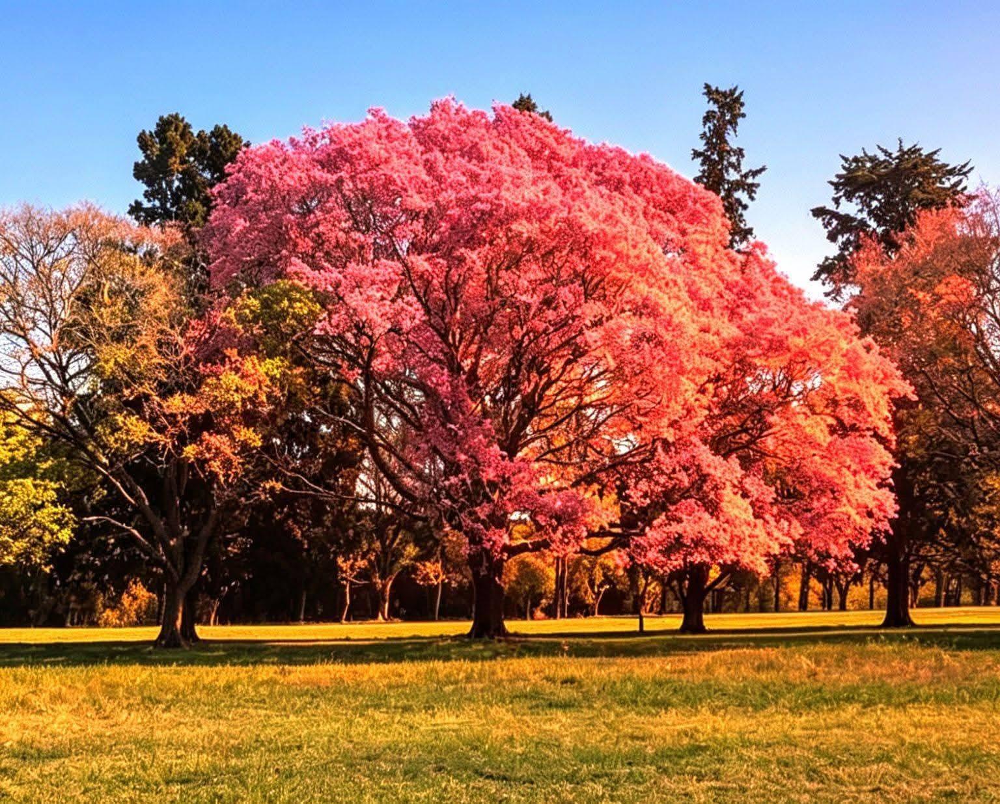

Ubicada sobre las barrancas del río Paraná, Santa Elena es una ciudad entrerriana reconocida por sus paisajes naturales, su tradición pesquera, su tranquilidad y la calidez de su gente.
Conocer la ciudad
Conocé cómo nació Santa Elena y cómo fue evolucionando hasta convertirse en uno de los destinos más importantes del norte entrerriano.
Leer más
Barrancas, playas, monte nativo y una gran biodiversidad convierten a Santa Elena en un destino ideal para disfrutar al aire libre.
Descubrir
El río Paraná ofrece una de las mejores experiencias de pesca deportiva de la región durante todo el año.
Más información